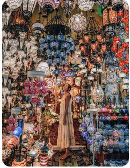

Video, size görüşünüzü kanıtlamak için güçlü bir yol sunar.
Çevrimiçi Video'ya tıkladığınızda, eklemek istediğiniz videoya ait ekleme kodunu yapıştırabilirsiniz. Belgenize en iyi uyan videoyu çevrimiçi olarak aramak için bir anahtar sözcük de yazabilirsiniz.
Word, belgenizin profesyonelce üretilmiş görünmesini sağlamak için birbirini tamamlayan üst bilgi, alt bilgi, kapak sayfası ve metin kutusu tasarımları sağlar. Örneğin, birbiriyle uyumlu bir kapak sayfası, başlık ve kenar çubuğu ekleyebilirsiniz. Ekle'ye tıklayın ve ardından farklı galerilerden eklemek istediğiniz öğeleri seçin.
Temalar ve stiller de belgenizin düzenli kalmasına yardımcı olur.
Tasarım'a tıklayıp yeni bir Tema seçtiğinizde, resimler, grafikler ve SmartArt grafikleri, yeni temanızla eşleşecek şekilde değiştirilir. Stilleri uyguladığınızda, başlıklarınız yeni tema ile eşleşecek şekilde değiştirilir.
Word'de ihtiyaç duyduğunuz yerlerde görüntülenen yeni düğmeler sayesinde zaman kazanın. Bir resmin belgenize sığma şeklini değiştirmek için resme tıklayın. Resmin yanında bir düzen seçenekleri düğmesi belirir. Bir tablo üzerinde çalışırken, bir satır veya sütun eklemek istediğiniz yere tıklayın ve ardından artı işaretine tıklayın.
Yeni Okuma görünümünde okumak da daha kolaydır.
Belgenin bölümlerini daraltabilir ve istediğiniz metne odaklanabilirsiniz. Sona ulaşmadan önce okumayı durdurmanız gerekirse, Word farklı bir cihazda bile kaldığınız yeri hatırlar.